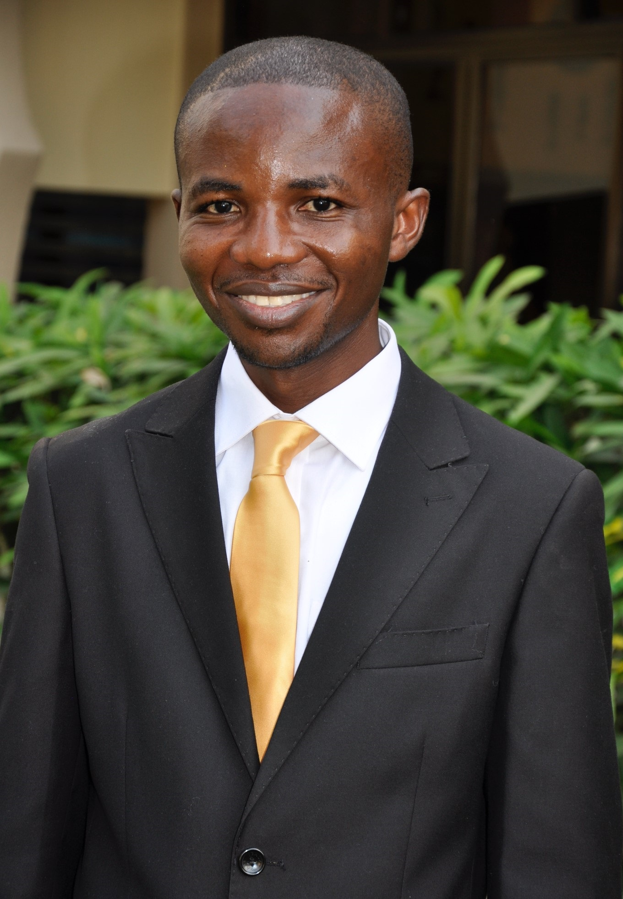

Team

Prof. Alice Odingo
Dr. Jackline Nyerere
Dr. Wilson Mutuma

Dr. Purity Muthoni

Dr. Godwin Opinde
Dr. Farai Kapfudzaruwa

Dr. Orleans Mfune

Dr. Gerald Yiran

Dr. Camillus Wongnaa

Dr. Nashiru Sulemana

Dr. Olushola Fadairo